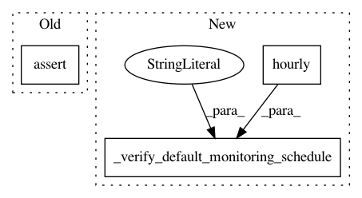

553029bec8448c014966c44a9f81a93dede00b48,tests/integ/test_model_monitor.py,,test_byoc_monitor_create_and_update_schedule_config_with_customizations,#Any#Any#Any#Any#Any#Any#,1948
Before Change
]
== "Disabled"
)
assert (
schedule_description["MonitoringScheduleConfig"]["MonitoringJobDefinition"][
"NetworkConfig"
]["EnableNetworkIsolation"]
== NETWORK_CONFIG.enable_network_isolation
)
_wait_for_schedule_changes_to_apply(my_byoc_monitor)
byoc_env.update(UPDATED_ENVIRONMENT)
After Change
_wait_for_schedule_changes_to_apply(my_byoc_monitor)
schedule_description = my_byoc_monitor.describe_schedule()
_verify_default_monitoring_schedule(
sagemaker_session=sagemaker_session,
schedule_description=schedule_description,
cron_expression=CronExpressionGenerator.hourly(),
statistics=statistics,
constraints=constraints,
instant_count=UPDATED_INSTANCE_COUNT,
instant_type=UPDATED_INSTANCE_TYPE,
volume_size_in_gb=UPDATED_VOLUME_SIZE_IN_GB,
volume_kms_key=updated_volume_kms_key,
output_kms_key=updated_output_kms_key,
publish_cloudwatch_metrics="Disabled",
max_runtime_in_seconds=UPDATED_MAX_RUNTIME_IN_SECONDS,
env_key=UPDATED_ENV_KEY_1,
env_value=UPDATED_ENV_VALUE_1,
network_config=UPDATED_NETWORK_CONFIG,
role=UPDATED_ROLE,
)
_wait_for_schedule_changes_to_apply(monitor=my_byoc_monitor)
my_byoc_monitor.stop_monitoring_schedule()
In pattern: SUPERPATTERN
Frequency: 4
Non-data size: 3
Instances
Project Name: aws/sagemaker-python-sdk
Commit Name: 553029bec8448c014966c44a9f81a93dede00b48
Time: 2020-12-08
Author: milaha@amazon.com
File Name: tests/integ/test_model_monitor.py
Class Name:
Method Name: test_byoc_monitor_create_and_update_schedule_config_with_customizations
Project Name: aws/sagemaker-python-sdk
Commit Name: 553029bec8448c014966c44a9f81a93dede00b48
Time: 2020-12-08
Author: milaha@amazon.com
File Name: tests/integ/test_model_monitor.py
Class Name:
Method Name: test_default_monitor_attach_followed_by_baseline_and_update_monitoring_schedule
Project Name: aws/sagemaker-python-sdk
Commit Name: 553029bec8448c014966c44a9f81a93dede00b48
Time: 2020-12-08
Author: milaha@amazon.com
File Name: tests/integ/test_model_monitor.py
Class Name:
Method Name: test_default_monitor_create_and_update_schedule_config_with_customizations
Project Name: aws/sagemaker-python-sdk
Commit Name: 553029bec8448c014966c44a9f81a93dede00b48
Time: 2020-12-08
Author: milaha@amazon.com
File Name: tests/integ/test_model_monitor.py
Class Name:
Method Name: test_byoc_monitor_attach_followed_by_baseline_and_update_monitoring_schedule